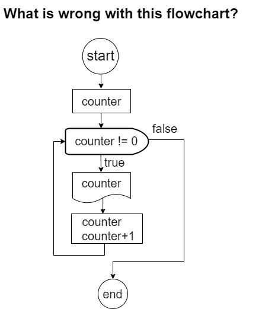
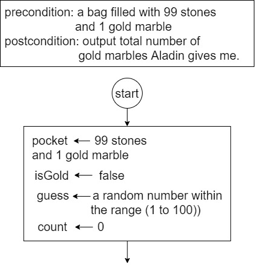
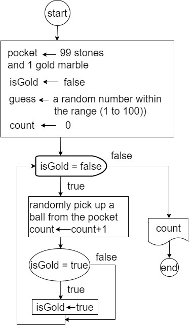

🌝 Lecture Highlights
🌚 ponder-1:Let's Trace a Flowchart and Corresponding JavaScript Code
🌚 ponder-2: Flowchart Clinic
🌚 ponder-3:Variations of Loop
variation-1: counting down
🌚 FlowChart Clinic: No More Oops! in Loops
check the answer
It forgets to initialize a variable that is used in the condition of the loop.
Remember that the first time the condition is checked is before starting the execution of the body of the loop.
check the answer
It is off by 1 in the number of iterations, i.e., it prints a line consists of 11.
Typically this is due to a mismatch between the condition of the loop and the initialization of the variables used in the condition.
To avoid such types of errors, it is often convenient to test the loop with a small ovalues for the variables. In the example above, if we check the loop by printing 1 star, instead of 10 (by substituting 10 with 1 in the condition of the loop), we immediately notice that the loop would print 2 stars, instead of 1.
check the answer
It forgets to update the variables appearing in the condition of the loop.
The loop will never terminate.
🌚 Tip: Always Send Your Loop Code to ICU
- I: initialize the variable
- C: condition for exit
- U: update the variable
🌚 ponder-4: Flag revisit: Terminate the Loop Early
A flag is a boolean variable (only can be set to true or false). We have encountered the concept of flag when learning "if-else", the car maintenance example. If a flag is used in a while loop to control the loop execution, then the while loop is referred to as a flag-controlled while loop.
Example of using a Flag
One day you encountered the Aladdin's lamp. You wished for a gold marble.
He agrees, but there is a bonus rule for the wish. He puts the marble in a pocket, mixed with another 99 stone marbles.
He keeps counting how many marbles you have taken out. After you take the gold marble, he will give you equal number of gold marbles to the stone marbles you have taken out.
Draw the flowchart for this game.The initialization of the flowchart is offered as below:
hint: When will the lamp god waive a flag to inform you that the game ends?
hint: What will be an appropriate variable name for that flag?
check the answer
🌚 ponder-5: Questions to Ask When Designing a While Loop
Now that you are familiar with the while loop, make sure that you can distinguish between each control type(whether it is a flag-control while loop, or an event-control while loop) and when each control structure should be used. A programmer should ask the following questions when designing a loop:
- what is the loop's logical expression?
- what needs to be updated in the logical expression?
- what needs to be initialized before the while loop?
- what statements should be repeated in the loop?
- what is known when the loop finishes?
🌚 ponder-6: DO NOT DRAW THE FLOWCHART OR WRITE THE CODE!
Look at each of the following problems and answer the questions for each. Do not write code!
Problem-1: Ask the user to type in a word, one character at a time, and print how many uppercase letters are contained in the word. The input is terminated by the number "0". Hint: The computer should continue to read in one character at a time and count those that are upper-case characters until a "0" is read.
- what needs to be updated in the logical expression?
- What control form of the while loop should be used, i.e., count, sentinel, EOF, flag, or other event controlled?
- Why was this particular construct chosen?
- What needs to be initialized before the while loop?
- What should be placed inside the loop?
- What is known when the loop finishes?
Problem-2:There are around 10 students regularly participtating in CTC each week. At the end of the semester, I am going to write a note to each one of them and inform them of their curved marks. It is necessary to read in a student's name and their marks being adjusted and print a letter for each.
- what needs to be updated in the logical expression?
- What control form of the while loop should be used, i.e., count, sentinel, EOF, flag, or other event controlled?
- Why was this particular construct chosen?
- What needs to be initialized before the while loop?
- What should be placed inside the loop?
- What is known when the loop finishes?
exercise: Draw the Flowchart for the above Two Questions.
🌚 Algorithm Design Challenge-1: Reverse A Number's Digits
Given a positive integer, output a number whose indigits are in the reversed order of the input
🌚 Algorithm Design Challenge-2: Record of Dice Throwing
Write a program which uses a for statement to simulate 100 throws of a die.
'Keep track' of the number of times each number is thrown using 6 integer variables.
After all the throws output the information in a table. For example,
Number Number of times thrown
--------------------------------
1 34
2 27
Number Number of times thrown
--------------------------------
1 34
2 27